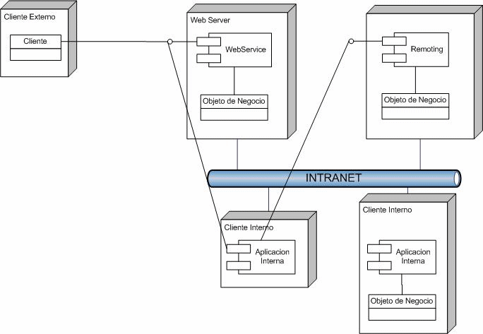

Web Services U Object Remoting
Hace un tiempo publique en Netveloper un artículo sobre web services y object remoting. Puedes leer el artículo, pero también he decidido guardar una copia en este blog.
Sigue leyendo...
Conceptualmente Web Service y Remoting son lo mismo, objetos distribuidos. La diferencia principal es el protocolo.
En Remoting puedes usar protocolos no estándares. En Web Services usa SOAP, o RPC-XML, en general estándares abiertos, sobre HTTP.
-
Si quieres publicar a la web tus servicios, entonces debes usar Web Services, porque tus clientes pueden estar usando otro ambiente, como Java, PHP, etc, y lo que importa es la interoperabilidad.
-
Si es para manejo interno, el remoting puede tener mejor performance si usas como otros protocolos, que usen TCP y manejen binarios, en vez de soap, de todas maneras remoting se puede hacer con soap pero es lo mismo que web services, si lo usas sobre IIS.
-
Tu puedes tener remoting sin tener que instalarlos en el IIS. Eso puede tener ventajas también en el performance, pero tienes que preocuparte de blindarlo de todas las otras caracteristicas que te agrega IIS, como SSL, logging, seguridad, etc. En el fondo, es como que tuvieras que construir tu propio web server. Por eso que se recomienda usar remoting en la intranet, donde normalmente la seguridad no es tan crítica porque se supone que todos los computadores son confiables (se supone).
-
Probablemente, has visto mejor performance debido a la serialización. Los web services usan XMLSerializer, mientras que en remoting se usa SOAPFormatter o BinaryFormatter, que generan mensajes más comprimidos y se generan más rápido, además mandar un mensaje binario es más rápido que un XML, por ponerlo de algún modo. Además hay algunos detalles técnicos con respecto a la cantidad de conexiones que permite IIS sobre remoting, pero no creo que sea el caso.
¿Cómo decidir?
En Microsoft hay un artículo al respecto: ASP.NET Web Services or .NET Remoting: How to Choose
Otro artículo interesante está en Fuzzy Boundaries: Objects, Components, and Web Services.
En mi experiencia:
Si voy a interoperar con agentes externos, que no controlo, uso Web Services, porque es un estándar abierto. Sólo uso object remoting en aplicaciones dentro de una intranet, porque muchas veces no puedes controlar los firewalls, routers, etc. Sólo tiene sentido usar webservice u object remoting si los servicios van a ser usados entre máquinas distintas. Si no hay que usar objetos comunes y corrientes. Object Remoting y Web services deben ser una interfaz a objetos de negocios internos, es decir, la lógica de negocios no debe estar en ellos, sino que en clases internas que se exponen usando estos mecanismos. Esto es conocido como el patrón Adapter o Wrapper, que sería más o menos como muestra la siguiente imagen:

Abusando de la notación UML, lo que la Figura muestra son algunas posibles configuraciones.
Tenemos:
-
Objeto de Negocio que implementa la lógica de negocios
-
Un WebService, que publica los servicios del objeto de negocios al mundo exterior.
-
Un Objeto Remoting que publica lo mismo para el mundo interior, usando object remoting.
-
Tenemos un cliente interno que podría usar web services o remoting.
-
Un cliente interno que usa directamente el objeto de negocios.
En este patrón usamos el web service y el remoting como un Wrapper, para publicar la funcionalidad, que la realiza el objeto de negocios, eso nos da flexibilidad, y re utilización de lógica.